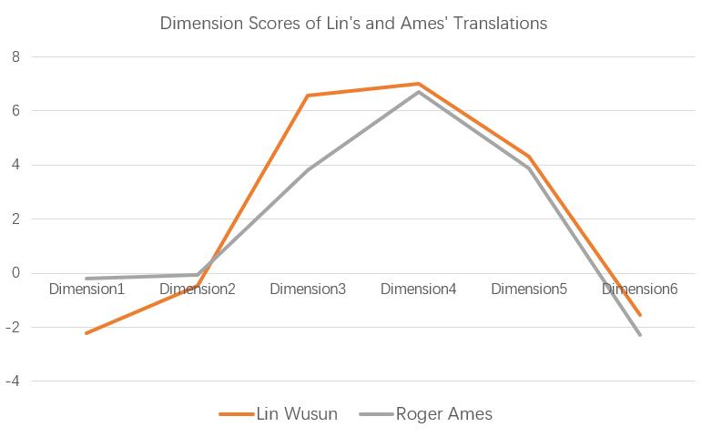

|
Hi there! I am a second-year master student in the School of Foreign Languages at Beihang University, where I am fortunate to be supervised by Prof. Duoxiu Qian. I am broadly interested in English translation and linguistics. My recent research focuses on variational pragmatics and second language acquisition. Email / CV / Transcripts |

|
|
• Master's Degree, 2023 English Translation, GPA: 92/100 Beihang University (#253 in the US News Best Global University Ranking)
• Bachelor's Degree, 2021 English Translation and Interpreting, GPA: 3.7/4 Beihang University
• International Summer School, 2019 University of Leeds (#140 in the US News Best Global University Ranking) |
|
•
|
|
|
|  |
A comparative study of Chinese to English translations by domestic and foreign translators through examining the register variation based on the Multi-dimensional Analysis model. |

|
Selected patent texts in automobile, AI, medicine and chemistry four fields as translation samples. Used Bleu score to objectively evaluate the performances. Analyzed the translations in detail on the level of terms, syntax, style, and format. |